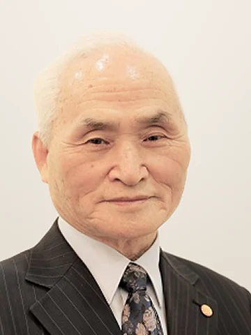

1960
01 · 시작
1960년 6월 12일,
첫 예배
원주중부교회는 ‘하나님 중심, 성경 중심, 교회 중심’의 믿음과 삶의 공동체를 소망하며 세워졌습니다. CTS 교회행전(2018)은 그 출발을 한 가정에서 드린 작은 예배로 전합니다.
1960년대
원주중부교회
원주중부교회

원주중부교회 신앙유산 기록관
이 기록관에 대하여
1960년 6월 12일 세워진 원주중부교회가 처음부터 지켜 온 비전입니다. 이 비전으로 66년째 예배를 이어 온 교회의 이야기를 다섯 장에 담았습니다.
01목소리
유치부 아이부터 원로장로까지, 원주중부교회 사람들이 답했습니다. 카드를 누르면 그 대답을 이 자리에서 직접 들을 수 있습니다.
영상 · 원주중부교회 16차 중부가족행복축제 홍보영상(2026. 5.) · 직분은 촬영 당시 기준
02오늘 2026. 11. 8.
찬양대의 찬양, 눈을 감은 기도, 세례를 받는 성도의 모은 두 손. 66년째 이어지는 원주중부교회 예배의 오늘입니다.
 주일 설교
주일 설교 세례예식
세례예식 찬양대
찬양대 본당 예배
본당 예배 주일학교
주일학교 영아부
영아부다음 세대
영상·사진 · CTS 강원방송 신앙유산 기록 촬영(2026. 11. 8.)
03걸어온 길 1960 — 2026
원주중부교회는 ‘하나님 중심, 성경 중심, 교회 중심’의 믿음과 삶의 공동체를 소망하며 세워졌습니다. CTS 교회행전(2018)은 그 출발을 한 가정에서 드린 작은 예배로 전합니다.
설립부터 2003년까지 네 분의 담임목사가 교회를 섬겼습니다. 3대 박원규 목사를 비롯한 선대 목회자들과 성도들이 교회의 터를 닦았고, 수십 년을 한자리에서 섬긴 장로님들이 오늘의 교회를 만들었습니다.
이 시절의 이야기는 문서보다 성도들의 기억에 더 많이 남아 있습니다. 원로장로님들의 인터뷰로 이 장을 채워 갑니다.



2003년 5월 22일, 김미열 목사가 제5대 담임목사로 부임했습니다. 원주에서 고등학교를 다니던 시절 이 교회에 출석했던 그는 안산반월교회에서 20년을 섬긴 뒤, 담임목사가 공석이던 교회의 부탁으로 강단에 섰고 그 인연으로 부임했습니다.
“고향교회 같은 곳에서 목회하는 것이 맞는지 고민이 컸지만, 지금으로서는 너무 좋은 판단이었다.”김미열 목사, 2015년 인터뷰
강원노회장과 총신대학교 총동창회장을 지냈고, 2026년 강원특별자치도기독교총연합회 대표회장을 맡았습니다.
부임 이듬해 건축을 시작해 2006년 무실동에 지금의 예배당을 세웠습니다. 하늘을 향해 겹겹이 솟은 예배당은 무실동의 풍경이 되었고, 이곳에서 주일마다 다섯 번의 예배가 드려집니다.
2026년 6월 13일, 설립 66주년 기념예배에서 장로 1명, 안수집사 28명, 권사 65명, 명예권사 11명이 임직했습니다. 교회는 예배당 가까이에 예수가족센터(종합섬김센터)를 준비하며 설립 70주년을 바라봅니다.
 설립 66주년 기념예배 · 교회 유튜브
설립 66주년 기념예배 · 교회 유튜브
04세상 속으로
“우리 교회는 전도에김미열 목사, 2015년 인터뷰
목숨 건 교회”
명절의 고속도로 나들목에서, 원주천 둑길에서, 성탄을 앞둔 이웃의 문 앞에서. ‘세상을 축복하는 교회’는 교회 밖에서 이루어집니다.
명절이면 원주 나들목에 천막을 세우고 고향을 찾은 가족들을 환영합니다. 교회가 스스로 ‘우리 교회의 브랜드’라 부르는 전도입니다.
성도들이 이웃을 교회로 초대하는 축제입니다. 2023년에는 시민 400여 명이 처음 교회를 찾았고, 2026년 축제는 11월 22일에 열렸습니다.
목회자와 성도들이 원주천 8km 구간을 걸으며 도시를 깨끗하게 합니다. 2026년으로 24년째입니다.
해마다 성탄을 앞두고 이웃에게 쌀 1,000포를 나눕니다. 올해 나눔은 12월 11일입니다.
2007년 이후 해마다 선교사를 파송해, 2025년 현재 11개 나라 14가정을 파송하고 지원합니다. 지역선교훈련원(LMTC)으로 평신도 선교사를 세우고, 아프리카에는 해마다 우물을 팝니다.
영상 · CTS뉴스(2025·2026)
05이어 쓰는 기록
시무장로 11분, 원로장로 6분, 은퇴장로 22분. 교회의 추천을 받은 분들의 신앙 이야기를 2027년까지 영상과 글로 기록해 이 자리에 더합니다.
명단과 사진 · 원주중부교회 홈페이지 ‘섬기는 사람들’(2026년 11월 기준). 사진이 없는 분은 성(姓)으로 표시했습니다.
함께 채워 주세요
1960년부터 2003년까지, 옛 예배당과 성도들의 모습이 담긴 사진과 주보, 기억을 모읍니다. 보내 주신 자료는 확인을 거쳐 이 기록관과 설립 70주년 기념 기록에 담습니다.
교회 사무실 033-744-2760기록의 순서
최근 더한 기록 2026. 11. 24. · 11월 8일 주일 촬영 영상과 사진